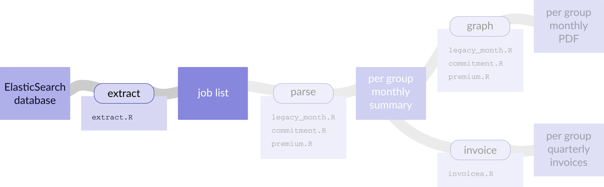
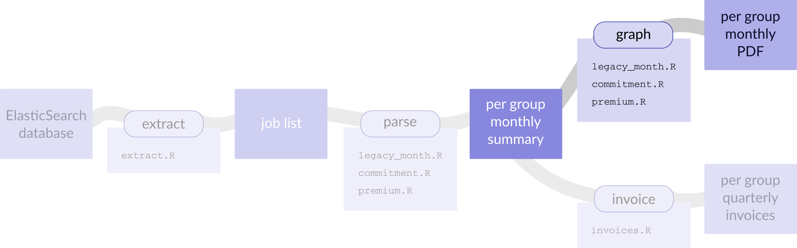
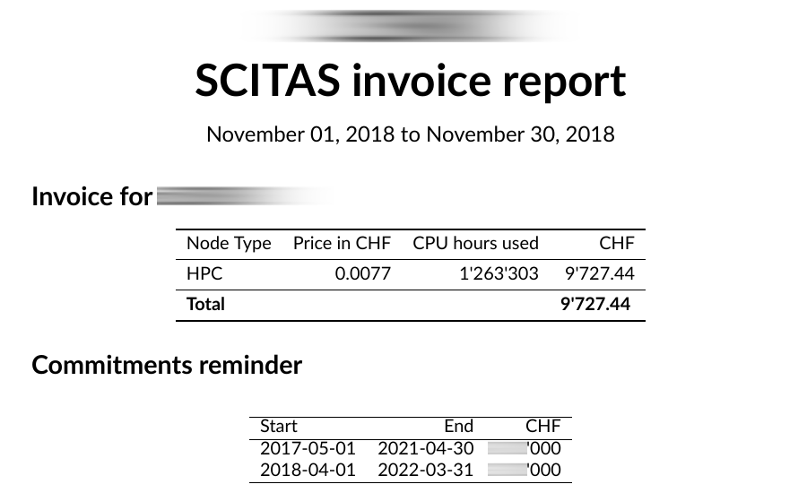

High Performance Computers
invoices
it’s R!
Vittoria Rezzonico
December 10th 2018
Who am I
What is SCITAS
SCITAS type of users
free
premium
commitment
legacy
Why R
beautiful graphs, powerful graphical engine (ggplot2)
Why R
intuitive language (at least, for me)
Why R
we need to do statistics, we use appropriate tools
Why R
I wanted LaTeX: knitr
Why R
it’s Free and Open Source Software
Invoicing
Architecture of the system

Extract

connects to the ElasticSearch
dumps data about all jobs in a text file
query@scitassrv2:~/scitas-stats/data♥ wc -l jobs_??18.txt
125745 jobs_0118.txt
208919 jobs_0218.txt
243342 jobs_0318.txt
536520 jobs_0418.txt
234345 jobs_0518.txt
829662 jobs_0618.txt
202575 jobs_0718.txt
381770 jobs_0818.txt
260181 jobs_0918.txt
427098 jobs_1018.txt
373677 jobs_1118.txt
3823834 total
query@scitassrv2:~/scitas-stats/data♥ head -16 jobs_1118.txt
Cluster|Partition|JobIDRaw|User|Account|Start|End|Submit|NCPUS|NNodes|ReqMem|NodeList|ReqGRES|LevelFS|Timelimit|ReqCPUS
fidis|parallel|1346484|user1|lab1|2018-11-28T09:44:44|2018-11-28T09:45:59|2018-11-28T09:44:44|9|1|4096|f137|(null)|1.557204|NA|NA
fidis|parallel|1353745|user1|lab1|2018-11-29T18:09:30|2018-11-30T00:47:39|2018-11-29T18:09:30|9|1|4096|g207|(null)|0.975728|NA|NA
fidis|parallel|1343107|user1|lab1|2018-11-26T16:19:18|2018-11-26T21:20:17|2018-11-26T16:19:16|9|1|4096|f339|(null)|12.301852|NA|NA
fidis|parallel|1348562|user1|lab1|2018-11-28T10:18:04|2018-11-28T16:12:32|2018-11-28T10:16:54|9|1|4096|f096|(null)|1.533328|NA|NA
fidis|parallel|1353764|user1|lab1|2018-11-29T18:11:02|2018-11-30T00:49:53|2018-11-29T18:10:53|9|1|4096|g178|(null)|0.972803|NA|NA
fidis|parallel|1353739|user1|lab1|2018-11-29T18:09:03|2018-11-30T00:43:35|2018-11-29T18:09:03|9|1|4096|g082|(null)|0.975728|NA|NA
fidis|parallel|1313538|user2|lab2|2018-11-12T17:20:19|2018-11-12T17:20:54|2018-11-12T17:20:16|28|1|4096|g047|(null)|6.56051|NA|NA
fidis|parallel|1337796|user3|lab3|2018-11-22T19:57:42|2018-11-23T07:57:56|2018-11-22T17:48:32|56|2|4096|f[198,351]|(null)|0.754477|NA|NA
fidis|parallel|1337793|user3|lab3|2018-11-22T18:19:40|2018-11-23T06:19:56|2018-11-22T17:47:55|56|2|4096|f[025,036]|(null)|0.754266|NA|NA
fidis|parallel|1337627|user3|lab3|2018-11-22T17:02:33|2018-11-23T05:02:56|2018-11-22T16:38:43|56|2|4096|f[132,138]|(null)|0.75273|NA|NA
fidis|parallel|1337676|user3|lab3|2018-11-22T17:37:15|2018-11-23T05:37:26|2018-11-22T17:08:35|56|2|4096|f[008,013]|(null)|0.75352|NA|NA
fidis|parallel|1336932|user3|lab3|2018-11-22T13:33:17|2018-11-22T13:33:21|2018-11-22T13:32:00|56|2|4096|f[041,158]|(null)|0.748876|NA|NA
fidis|parallel|1336933|user3|lab3|2018-11-22T13:33:17|2018-11-22T13:33:20|2018-11-22T13:32:00|56|2|4096|f[228,262]|(null)|0.748876|NA|NA
fidis|parallel|1337672|user3|lab3|2018-11-22T17:09:02|2018-11-23T05:09:26|2018-11-22T17:08:26|56|2|4096|f[122,171]|(null)|0.752824|NA|NAExtract
- if too many jobs: crash
- RAM intensive
- can run for long
Extract
- result complete and human readable
- nice for archiving
- compliance
I ♥ library(elastic)
Parse

for each account type
for each group
creates summary
Cluster|Partition|JobIDRaw|User|Account|Start|End|Submit|NCPUS|NNodes|ReqMem|NodeList|ReqGRES|LevelFS|Timelimit|ReqCPUS
fidis|parallel|1346484|user1|lab1|2018-11-28T09:44:44|2018-11-28T09:45:59|2018-11-28T09:44:44|9|1|4096|f137|(null)|1.557204|NA|NA
fidis|parallel|1353745|user1|lab1|2018-11-29T18:09:30|2018-11-30T00:47:39|2018-11-29T18:09:30|9|1|4096|g207|(null)|0.975728|NA|NA
fidis|parallel|1343107|user1|lab1|2018-11-26T16:19:18|2018-11-26T21:20:17|2018-11-26T16:19:16|9|1|4096|f339|(null)|12.301852|NA|NA
fidis|parallel|1348562|user1|lab1|2018-11-28T10:18:04|2018-11-28T16:12:32|2018-11-28T10:16:54|9|1|4096|f096|(null)|1.533328|NA|NA
fidis|parallel|1353764|user1|lab1|2018-11-29T18:11:02|2018-11-30T00:49:53|2018-11-29T18:10:53|9|1|4096|g178|(null)|0.972803|NA|NA
fidis|parallel|1353739|user1|lab1|2018-11-29T18:09:03|2018-11-30T00:43:35|2018-11-29T18:09:03|9|1|4096|g082|(null)|0.975728|NA|NA
fidis|parallel|1313538|user2|lab2|2018-11-12T17:20:19|2018-11-12T17:20:54|2018-11-12T17:20:16|28|1|4096|g047|(null)|6.56051|NA|NA
fidis|parallel|1337796|user3|lab3|2018-11-22T19:57:42|2018-11-23T07:57:56|2018-11-22T17:48:32|56|2|4096|f[198,351]|(null)|0.754477|NA|NA
fidis|parallel|1337793|user3|lab3|2018-11-22T18:19:40|2018-11-23T06:19:56|2018-11-22T17:47:55|56|2|4096|f[025,036]|(null)|0.754266|NA|NA
fidis|parallel|1337627|user3|lab3|2018-11-22T17:02:33|2018-11-23T05:02:56|2018-11-22T16:38:43|56|2|4096|f[132,138]|(null)|0.75273|NA|NA
fidis|parallel|1337676|user3|lab3|2018-11-22T17:37:15|2018-11-23T05:37:26|2018-11-22T17:08:35|56|2|4096|f[008,013]|(null)|0.75352|NA|NA
fidis|parallel|1336932|user3|lab3|2018-11-22T13:33:17|2018-11-22T13:33:21|2018-11-22T13:32:00|56|2|4096|f[041,158]|(null)|0.748876|NA|NA
fidis|parallel|1336933|user3|lab3|2018-11-22T13:33:17|2018-11-22T13:33:20|2018-11-22T13:32:00|56|2|4096|f[228,262]|(null)|0.748876|NA|NA
fidis|parallel|1337672|user3|lab3|2018-11-22T17:09:02|2018-11-23T05:09:26|2018-11-22T17:08:26|56|2|4096|f[122,171]|(null)|0.752824|NA|NAload("commitment_lab1_181101-181130.RData")
ls()## [1] "commitments.df" "daterange" "end" "groupname"
## [5] "gtot" "imagefile" "mapalpha" "nodeusage"
## [9] "prices" "replaceT" "start" "totalcost"
## [13] "userusage" "waittime"userusage## User Node Type Price CPU hours used
## 1 user1 HPC 0.0077 5.444444e-02
## 2 user2 HPC 0.0077 1.165049e+03
## 3 user3 HPC 0.0077 2.907140e+04nodeusage## Node Type Price CPU hours used CHF
## 1 HPC 0.0077 30236.5 232.8211Parse
Extra work for commitment
Need to retrieve information on all commitments
Graph

takes the info in the RDatas and displays it



I ♥ library(tikzDevice)
I ♥ library(ggplot2)
I ♥ library(knitr)
I ♥ xelatex
Invoices

Produces an Excel sheet with the “quarterly” totals
all of this is done automatically (ahem)
during the night of the first day of each month
Pros
- Readable code, easy to take over
- Integration with LaTeX
- Integration with ElasticSearch
- We could do invoicing with no human interaction
Cons
- Still some issues to iron out
- Do we really need to store all the info about the jobs?
- Automation still a bit theoretical
- SCITAS staff are mostly Python people
Bonus slide
Other cool stuff I do with R
- this reveal.js presentation entirely made with R
- could be also shown via mybinder.org
- apps with Shiny